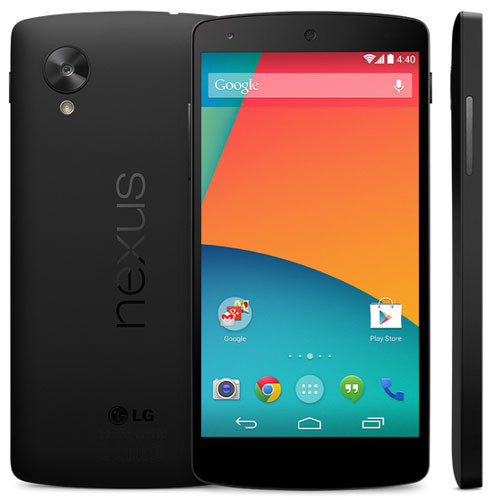

NEXUS 5

Recién presentado por Google, el LG Nexus 5 contiene casi el mismo hardware que el LG G2 pero a un precio más bajo: cuesta desde 349 euros por la versión de 16GB. Con el mismo procesador Snapdragon 800, 2GB de RAM y pantalla de 5 pulgadas con resolución 1920x1080 píxels, el motivo por el que no lo consideramos el mejor del momento son tres, que detallamos a continuación, aunque no desmerecen el terminal en absoluto.
El primero es que cuenta con una batería de 2.300 mAh en vez de 3.000 como la que incluye el LG G2. Para aquellos que hagan un uso más intenso del teléfono notarán que se les queda corto algunos días y no van a llegar a casa. El segundo punto es que no tiene lector de tarjetas microSD. Por último, la cámara trasera es de solo 8 megapíxels, y aunque cuenta con estabilización óptica de imagen, no proporciona calidad mejorada con respecto a las cámaras de los teléfonos de finales de 2012.
Recortes que obviamente ha tenido que hacer Google, además de en la calidad de los materiales con los que está fabricado (plástico, aunque no de tan mala sensación en la mano como el Galaxy S4), para ofrecerlo por tan solo 349 euros. Tampoco quiero dejar de recalcar que los terminales Nexus están directamente actualizados por Google, lo cual siempre es muy positivo y algo a tener en cuenta.
PRINCIPAL